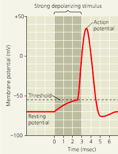

Neural Simulation
Evan Keeton
Timmy
- Student at Isoneday High School
- TEMSay program
- AP Biology
- Hottest student

- Uses NEST Software
What is NEST?
- NEural Simulation Technology (NEST)
- Library of tools
- Mimics neurons
- Various software
- Works with graphing

NEST Software(s)
| NEST Standalone | Python (PyNEST) |
 |
Neurons: A Review
- Cell body + axon
- Electrical gradient
- Action potential threshold
- Action potential travels along axon

Generating Potentials
Connection and Summation

Timmy's Choice: Python
import nest
import numpy
from matplotlib import pyplot
- Libraries to Import
- NEST - Neural simulation
- NumPy - Powerful computation
- MatPlotLib - Graphing
Background Noise Potential
neurons = nest.Create("iaf_psc_alpha", 5)
nest.SetStatus(neurons, [{"I_e": 500.0}, {"I_e": 376.0}, {"I_e": 200.0}, {"I_e": 100.0}, {"I_e": 0.0}])
nest.Simulate(100.0)
pyplot.show()
Poisson Generator
poisson = nest.Create("poisson_generator"); neuron = nest.Create("iaf_psc_alpha")
nest.Connect(poisson, neuron, syn_spec={'weight': 1.2})
nest.Simulate(100.0)
pyplot.show()
Temporal Summation in NEST
pre = nest.Create("iaf_psc_alpha", params={"I_e": 500.0}); post=nest.Create("iaf_psc_alpha")
nest.Connect(pre, post, syn_spec={'weight': 1.2})
nest.Simulate(100.0)
pyplot.show()
Spatial Summation in NEST
pre = nest.Create("iaf_psc_alpha", params={'I_e': 5}, 2); post = nest.Create("iaf_psc_alpha")
nest.Connect(pre, neuron, syn_spec={'weight': 900.0})
nest.Simulate(100.0)
pyplot.show()
A Word of Explanation
- Yes, "Timmy" is me
- "Timmy" clearly is the hottest student though
- For clarity certain details were excluded
- Multimeter (detecting voltage)
- Spike Detector (detecting spikes)
- MatPlotLib details (plotting, labelling, etc.)
- I also did not touch on installation